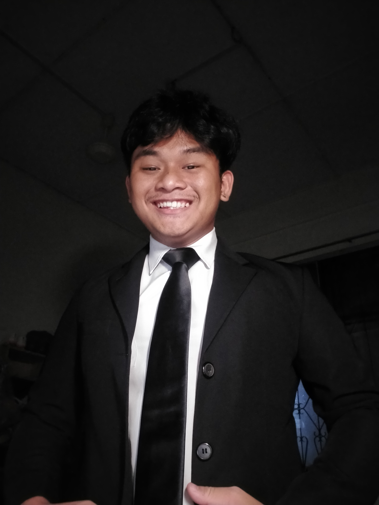

About Me
A self-taught web developer with a passion for coding and a knack for creating efficient and effective web solutions. With a Graduate Diploma in Information System Administration from Sarawak Skills, I have honed my skills in various programming languages and frameworks. I am dedicated to continuously improving my knowledge and staying up-to-date with the latest industry trends.
Projects - feel free to click on it for the live demo of these projects
Education
SMK Green Road (2015 - 2019)
Sijil Pelajaran Malaysia (SPM)
Sarawak Skills (2020 - 2021)
Sijil Kemahiran Malaysia Tahap 2 (SKM 2)- Pengurusan Pejabat/Office Administration
Sarawak Skills (2021 - 2022)
Sijil Kemahiran Malaysia Tahap 3 (SKM 3) - Penyeliaan Penguran Pejabat/Office Administration Supervision
Sarawak Skills (2023 - 2024)
Diploma Kemahiran Sarawak Tahap 4 (DKM 4) - Pentadbiran Sistem Maklumat Information System Administration
Work experience
Intern (IT Department | 4 March 2024 - 24 May 2024)
As an IT intern at Sarawak Skills, I provided technical support for students and faculty, handling issues like hardware malfunctions, software problems, and network connectivity. I was involved in maintaining the college’s IT systems, including software updates and virus scans. I managed help desk tickets, prioritizing and resolving requests while escalating complex issues when needed. I also helped with network management tasks and contributed to various IT projects, such as system upgrades and new software deployments. I assisted in organizing workshops and creating user guides to improve support resources. Through this role, I gained skills in troubleshooting technical issues, network administration, and project support, and I helped improve the efficiency of the help desk and documentation processes.
Volunteer (IT Department | 25 May 2024 - 24 June 2024)
s a volunteer in the IT Department at Sarawak Skills, I assisted with web administration tasks including updating website content, managing user accounts, and troubleshooting website issues. I helped maintain the college’s website by ensuring that all information was current and functional. I also supported the development of new web features and collaborated with the team to improve website functionality and user experience. Through this experience, I gained skills in web management, problem-solving, and teamwork while contributing to the enhancement of the college’s online presence.